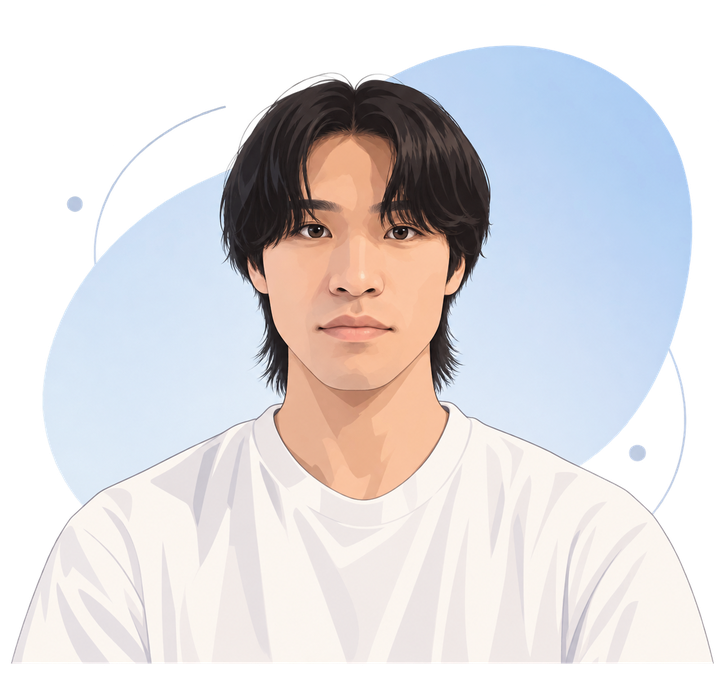

LP・購入フォーム／自主制作
Lumēra
年齢による肌の変化が気になり始めた女性に向けた、エイジングケア美容液のLPです。上質さと信頼感を軸に、購入フォームは入力エラーや決済エラーの画面まで、PC・スマホの14画面をFigmaで設計しました。
- 担当
- 企画、デザイン（Figma）／実装はAIと協働
- 期間
- 約3週間（実装まで）
- ツール
- Figma、Photoshop、Claude
Webデザイナー志望 鈴木優斗沖縄在住
コールセンターや接客の仕事で、相手に伝えることを続けてきました。デザインでも、見る人が迷わず、最後まで受け取れることを大切にしています。
授業の課題と自主制作から5つ。上の3つは、企画から実装までの考え方を詳しく紹介しています。
LP・購入フォーム／自主制作
年齢による肌の変化が気になり始めた女性に向けた、エイジングケア美容液のLPです。上質さと信頼感を軸に、購入フォームは入力エラーや決済エラーの画面まで、PC・スマホの14画面をFigmaで設計しました。
物語サイト・診断アプリ／授業課題・ペア制作
漢字の多い物語を子どもも楽しめるように、読み上げ機能と章ごとに変わるBGMを加えた物語サイトです。読み終えたあとは、登場キャラクターと連動した8問の性格診断へ進めるようにしました。
採用サイト・アプリ／授業課題・ペア制作
ドラマの世界観を借りた、架空組織のパロディ採用サイトです。「普通じゃないは、武器になる。」を軸に、本格的な見た目と意外なユーモアを両立させました。応募後は、ミッションに挑むアプリへつながります。
おみくじアプリ／授業課題
運勢だけでなく、未来の自分から届く手紙として、前向きな言葉を受け取れるおみくじです。
ECサイト／授業課題
20歳未満が閲覧しないよう、最初に年齢確認を表示するシーシャ専門店のサイトです。

鈴木優斗Yuto Suzuki
沖縄県在住。アプロスコンピュータ学院 Web制作&デザイン科で、Webデザインとコーディングを学んでいます（2026年11月 修了予定）。
これからはITの時代だと感じ、乗り遅れたくないと調べる中でWebデザインに出会いました。特にUIやLPのデザインに惹かれ、独学でFigmaを学んでLPを制作。ところが、ノーコードツールのSTUDIOで形にしようとすると、レイアウトが崩れて思うように作れませんでした。デザインを本当に形にするにはコーディングの知識が必要だと痛感し、HTML・CSS・JavaScriptを基礎から学べる職業訓練に進みました。
分かりやすく伝える
コールセンターで、電話とチャットのお客様対応をしてきました。言葉づかいや、物事を分かりやすく伝える工夫は、文章やレイアウトを考えるときの土台になっています。
相手が求めているものを察する
アパレル販売では、お客様の半数以上が海外の方でした。言葉が十分に通じない中で、何を探しているのかを察して提案してきた経験を、使う人の立場で導線を考えることに生かしています。
細部まで確かめる
自動車部品の製造と検品では、小さな傷も見逃さない確認を続けました。制作でも、余白や文字の折り返し、表示の崩れを最後まで確かめます。
見た目を整えるだけでなく、「使う人が迷わないか」「最後まで伝わるか」を考えて作ります。作ったら自分で使ってみて、分かりにくいところを見つける。シーシャ専門店のサイトを一度作ってから見返したとき、導線の分かりにくさに気づいたことが、ユーザビリティを強く意識するきっかけになりました。
デザインは自分で考え、実装はAIと協働しています。任せきりにはせず、意図を言葉にして伝え、出てきたものを自分で確かめて直します。
誰に、何を伝えるサイトかを最初に言葉にします。ペア制作では、ここで相手と考えをすり合わせました。
Figmaで画面を組み、配色や文字のルールを決めます。猫の勇者では、章ごとの背景色の設計表も作りました。
Claude・Gemini・ChatGPTに、デザインの意図を伝えてコードを生成します。複数のAIで案を比べることもあります。
ブラウザで操作して確認し、VS Codeで色や動き、切り替えの秒数などを手で調整します。画像はPhotoshopで色合いとコントラストを整えます。
画面幅を変えて、崩れや読みにくさがないかを確かめます。
このポートフォリオサイトも、構成・文章・デザインの方針を自分で決め、実装はAIと協働して制作しました。
習熟度を数字で表すのではなく、実際にやったことと、使った作品を書いています。
資格Webクリエイター能力認定試験 HTML5エキスパート 合格
勉強中Photoshop®クリエイター能力認定試験、Illustrator®クリエイター能力認定試験（2026年12月の中旬に受験予定）
AIツールClaude、Gemini、ChatGPT（実装と、アイデアの壁打ち）